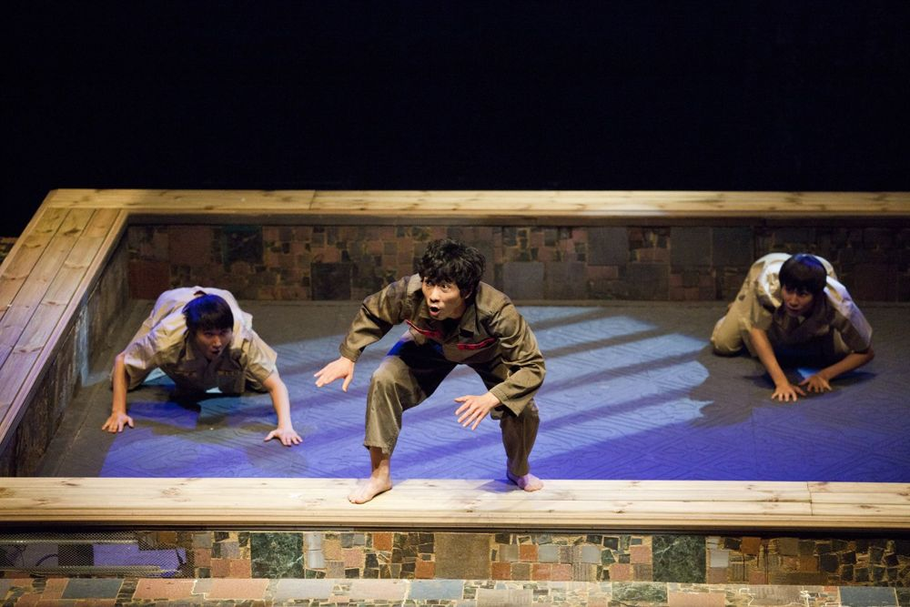

Green Pig > Archive > Psychopath

Thirteen scenes in which the story or statements of serial killer Myeongbo continue discontinuously, interrupted by statements from gangsters, prosecutors, chaebol executives, a government spokesperson and the murder victims. A serial play about "those who wreck" community, nature, morality and language, and a political comedy jeering at the powerful. But the jeer finally comes back to us, steeped in fetishism.
2012.9.22–10.7 / Namsan Arts Center Drama Center
Playwright & Director: Park Sanghyeon
Cast: Ryu Taeho, Kim Haksu, Ahn Minyeong, Kang Jinhwi, Yoo Seongjin, Lee Dongyeong, Kim Taegeun, Park Yunjeong, Lee Pilju, Jung Daeyong, Jeon Seonu, Jung Yanga, Hwang Miyeong, Lee Jeongho, Kwak Donghyeon, Park Haneul
Set: Park Chanho
Lighting: Kim Jeonghwa
Music: Min Gyeonghyeon
Costumes: Lee Yuseon
Video: Shin Seonghwan
Make-up: Lee Dongmin
Choreography: Kim Sujeong
Dramaturg: Cho Mansu
Acting coach: Kim Seonae
Associate director: Yoon Hansol
Producer: Song Gyeongok
Assistant director: Kang Damin
Previous: Brain Surgery | Next: Garden Killer
Back to the archive | Any work
Published 2026.11.13